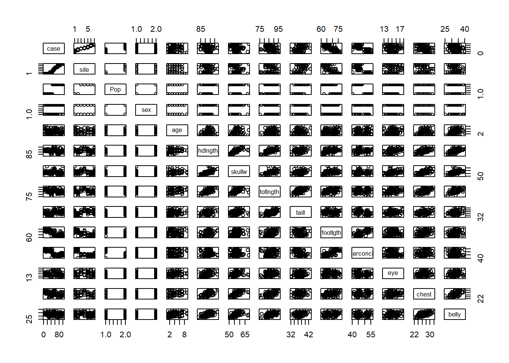

library(DAAG)
data(possum)
head(possum)
## case site Pop sex age hdlngth skullw totlngth taill footlgth earconch eye
## C3 1 1 Vic m 8 94.1 60.4 89.0 36.0 74.5 54.5 15.2
## C5 2 1 Vic f 6 92.5 57.6 91.5 36.5 72.5 51.2 16.0
## C10 3 1 Vic f 6 94.0 60.0 95.5 39.0 75.4 51.9 15.5
## C15 4 1 Vic f 6 93.2 57.1 92.0 38.0 76.1 52.2 15.2
## C23 5 1 Vic f 2 91.5 56.3 85.5 36.0 71.0 53.2 15.1
## C24 6 1 Vic f 1 93.1 54.8 90.5 35.5 73.2 53.6 14.2
## chest belly
## C3 28.0 36
## C5 28.5 33
## C10 30.0 34
## C15 28.0 34
## C23 28.5 33
## C24 30.0 321 Basics
\[ \require{physics} \require{braket} \]
\[ \newcommand{\dl}[1]{{\hspace{#1mu}\mathrm d}} \newcommand{\me}{{\mathrm e}} \]
\[ \newcommand{\Exp}{\operatorname{E}} \newcommand{\Var}{\operatorname{Var}} \newcommand{\Mode}{\operatorname{mode}} \]
\[ \newcommand{\pdfbinom}{{\tt binom}} \newcommand{\pdfbeta}{{\tt beta}} \newcommand{\pdfpois}{{\tt poisson}} \newcommand{\pdfgamma}{{\tt gamma}} \newcommand{\pdfnormal}{{\tt norm}} \newcommand{\pdfexp}{{\tt expon}} \]
\[ \newcommand{\distbinom}{\operatorname{B}} \newcommand{\distbeta}{\operatorname{Beta}} \newcommand{\distgamma}{\operatorname{Gamma}} \newcommand{\distexp}{\operatorname{Exp}} \newcommand{\distpois}{\operatorname{Poisson}} \newcommand{\distnormal}{\operatorname{\mathcal N}} \]
1.1 Quick overview
Given a set of observations of variables, we would like to understand the relationships among these variables.
The standard procedure for developing a statistical model is as follows:
- Proposing a model informed by exploratory data analysis and relevant domain knowledge.
- Estimating the parameters of the proposed model using the available data.
- Assessing the adequacy and quality of the fitted model.
- Revising the model based on the assessment results.
There are two primary goals and related ways to assess the model:
- Prediction (Generalization): We evaluate the fitted model on unseen data, using metrics like MSE or classification error. This assesses the model’s generalization ability, which is the primary focus of subjects like Statistical Learning or Machine Learning.
- Explanation (Inference): We use measures such as \(R^2\) to assess the goodness-of-fit of the fitted model, and we use confidence intervals and p-values to perform statistical inference about population parameters. Although these calculations are based on the observed sample, they are interpreted as statements about the population. This approach focuses on understanding relationships among variables and is central to traditional Statistical Modeling, including Regression Analysis.
Both Statistical Learning and specific methods like Regression Analysis may use both assessment strategies, but the emphasis differs. In this course, the focus is on the principles of modeling and statistical inference, with prediction discussed but not treated as the primary objective.
1.2 Population vs Sample
- Population: the set of all elements of interest in a particular study.
- Sample: is a subset of the population
- Statistical Inference: The process of using data collected on a sample to draw conclusions about a population is called statistical inference.
A population is described by parameters (e.g., \(\mu\), \(\sigma\), \(\beta\)). A sample produces statistics (e.g., \(\bar X\), \(s\), \(\hat\beta\)), which vary across repeated samples. Statistical inference uses the sampling distribution of these statistics to draw conclusions about population parameters. This part will be revisited later in Chapter 3.
Example 1.1 (gssr)
Click to expand.
According to a previous national media report, the average age of U.S. adults who watch national TV news is 60 years. A data analyst hypothesizes that the average age of frequent TV-news watchers is greater than 60. To test this, she uses the General Social Survey (GSS), accessible via the gssr R package [1], to draw a sample of 500 respondents and record their ages.
- Describe the population: All U.S. adults who watch TV news several times a week or more often, as defined by the GSS survey question on TV-news frequency.
- Describe the sample: A random sample of 500 GSS respondents who meet the above criterion and have valid age data.
- Sample size: \(n = 500\)
- Describe the statistical inference: We want to determine whether the mean age of frequent TV-news watchers is greater than 60 based on the sampled data.
1.3 Data structure
A dataset is a collection of values. Values are organized in two ways. Every value belongs to a variable and an observation.
Definition 1.1 (Variables and Observations [2])
- A variable contains all values that measure the same underlying attribute (like height, temperature, duration) across units.
- An observation contains all values measured on the same unit (like a person, or a day, or a race) across attributes.
Example 1.2 (possum)
Click to expand.
Researchers collected body measurements for bushtail possums in Eastern Australia. They trapped 104 possums and recorded location where possum was trapped, age, gender, head length, skull width, total length, tail length, etc. for each possum. For more details see Section A.1.
The dimension of the dataset is
dim(possum)
## [1] 104 14In this example, there are 14 variables, and 104 observations. Each column is a variable. In R you can use the column name to get access to the variable.
possum$hdlngth
## [1] 94.1 92.5 94.0 93.2 91.5 93.1 95.3 94.8 93.4 91.8 93.3 94.9
## [13] 95.1 95.4 92.9 91.6 94.7 93.5 94.4 94.8 95.9 96.3 92.5 94.4
## [25] 95.8 96.0 90.5 93.8 92.8 92.1 92.8 94.3 91.4 90.6 94.4 93.3
## [37] 89.3 92.4 84.7 91.0 88.4 85.3 90.0 85.1 90.7 91.4 90.1 98.6
## [49] 95.4 91.6 95.6 97.6 93.1 96.9 103.1 99.9 95.1 94.5 102.5 91.3
## [61] 95.7 91.3 92.0 96.9 93.5 90.4 93.3 94.1 98.0 91.9 92.8 85.9
## [73] 82.5 88.7 93.8 92.4 93.6 86.5 85.8 86.7 90.6 86.0 90.0 88.4
## [85] 89.5 88.2 98.5 89.6 97.7 92.6 97.8 90.7 89.2 91.8 91.6 94.8
## [97] 91.0 93.2 93.3 89.5 88.6 92.4 91.5 93.6Definition 1.2 (Quantitative and Qualitative [3])
- Quantitative data are observations measured on a naturally occurring numerical scale. It is also called numerical data.
- Qualitative data are nonnumerical data that can only be classified into one of a group of categories. It is also called categorical data.
In regression, qualitative variables must be encoded using indicator (dummy) variables.
Definition 1.3 (Discrete and Continuous [3])
- Discrete random variable: A random variable that assumes either a finite number of values or an infinite sequence of values such as 0, 1, 2…
- Continuous random variable: A random variable that may assume any numerical value in an interval or collection of intervals.
graph TD
A[All Variables] --> B[Numerical]
A --> C[Categorical]
B --> D[Continuous]
B --> E[Discrete]
NoteRandom variables
A variable in a dataset can be modeled by a random variable. The probability density function / probability mass function of the random variable can describe the distribution of all possible values of the variable in a dataset.
Making a measurement is equivalent to taking a sample from the corresponding random variable. This will be discussed in detail in Chapter 3.
1.4 Data Visualization
1.4.1 Qualitative (categorical) data
Usually the most important is the class relative frequency: \[ \text{class relative frequency}=\frac{\text{class frequency}}{n}. \]
To display it, we could use table, bar chart or pie chart.
Example 1.3 (possum)
Click to expand.
Here we still consider the possum dataset.
library(DAAG)
data(possum)
head(possum)
## case site Pop sex age hdlngth skullw totlngth taill footlgth earconch eye
## C3 1 1 Vic m 8 94.1 60.4 89.0 36.0 74.5 54.5 15.2
## C5 2 1 Vic f 6 92.5 57.6 91.5 36.5 72.5 51.2 16.0
## C10 3 1 Vic f 6 94.0 60.0 95.5 39.0 75.4 51.9 15.5
## C15 4 1 Vic f 6 93.2 57.1 92.0 38.0 76.1 52.2 15.2
## C23 5 1 Vic f 2 91.5 56.3 85.5 36.0 71.0 53.2 15.1
## C24 6 1 Vic f 1 93.1 54.8 90.5 35.5 73.2 53.6 14.2
## chest belly
## C3 28.0 36
## C5 28.5 33
## C10 30.0 34
## C15 28.0 34
## C23 28.5 33
## C24 30.0 32The variable Pop (location where possum was trapped) is qualitative. We could use the following ways to display it. We first compute the frequency table of the variable Pop:
table(possum$Pop)
##
## Vic other
## 46 58or relative frequency table:
table(possum$Pop)/length(possum$Pop)
##
## Vic other
## 0.4423077 0.5576923Then we could draw the barplot of this variable:
barplot(table(possum$Pop))
and the pie plot:
pie(table(possum$Pop))
Note that table is handling the statistics, while barplot and pie draw on top of the result from table.
1.4.2 Quantitative (numerical) data
For quantitative data, we would like to see the histogram, as well as computing some statistics: min, max, quartiles, median and mean.
- Histogram is an approximation of the distribution. In other words, we split the range into small segments (called bins), and count the frequency or relative frequency of data falling into these bins.
- Box plot consists of a box, two lines and possibly some points:
- The box in the box plot extends from the lower quartile to the upper quartile. The difference between the upper quartile and the lower quartile is called the inter-quartile range (IQR).
- The lines, known as whiskers, extend to one and a half times the interquartile range, but they stop at the most extreme data points that fall within this range.
- The points, considered as outliers, are those which are not covered by the box and the lines.
Histograms and boxplots help check normality and outliers before fitting regression. These summaries approximate the underlying distribution of the variable. In regression, we later apply similar tools to the residuals to check model assumptions.
Example 1.4 (possum)
Click to expand.
We still consider the possum dataset. We could use summary to compute the major statistics.
library(DAAG)
data(possum)
summary(possum)
## case site Pop sex age
## Min. : 1.00 Min. :1.000 Vic :46 f:43 Min. :1.000
## 1st Qu.: 26.75 1st Qu.:1.000 other:58 m:61 1st Qu.:2.250
## Median : 52.50 Median :3.000 Median :3.000
## Mean : 52.50 Mean :3.625 Mean :3.833
## 3rd Qu.: 78.25 3rd Qu.:6.000 3rd Qu.:5.000
## Max. :104.00 Max. :7.000 Max. :9.000
## NA's :2
## hdlngth skullw totlngth taill
## Min. : 82.50 Min. :50.00 Min. :75.00 Min. :32.00
## 1st Qu.: 90.67 1st Qu.:54.98 1st Qu.:84.00 1st Qu.:35.88
## Median : 92.80 Median :56.35 Median :88.00 Median :37.00
## Mean : 92.60 Mean :56.88 Mean :87.09 Mean :37.01
## 3rd Qu.: 94.72 3rd Qu.:58.10 3rd Qu.:90.00 3rd Qu.:38.00
## Max. :103.10 Max. :68.60 Max. :96.50 Max. :43.00
##
## footlgth earconch eye chest belly
## Min. :60.30 Min. :40.30 Min. :12.80 Min. :22.0 Min. :25.00
## 1st Qu.:64.60 1st Qu.:44.80 1st Qu.:14.40 1st Qu.:25.5 1st Qu.:31.00
## Median :68.00 Median :46.80 Median :14.90 Median :27.0 Median :32.50
## Mean :68.46 Mean :48.13 Mean :15.05 Mean :27.0 Mean :32.59
## 3rd Qu.:72.50 3rd Qu.:52.00 3rd Qu.:15.72 3rd Qu.:28.0 3rd Qu.:34.12
## Max. :77.90 Max. :56.20 Max. :17.80 Max. :32.0 Max. :40.00
## NA's :1The variable hdlngth (head length) is quantitative. We first show the histogram. We could use breaks to control the number of bins. Note that the function hist does not only draw the histogram; it also provides many useful pieces of information.
res <- hist(possum$hdlngth, breaks=10)
res
## $breaks
## [1] 82 84 86 88 90 92 94 96 98 100 102 104
##
## $counts
## [1] 1 6 2 12 22 27 22 7 3 0 2
##
## $density
## [1] 0.004807692 0.028846154 0.009615385 0.057692308 0.105769231 0.129807692
## [7] 0.105769231 0.033653846 0.014423077 0.000000000 0.009615385
##
## $mids
## [1] 83 85 87 89 91 93 95 97 99 101 103
##
## $xname
## [1] "possum$hdlngth"
##
## $equidist
## [1] TRUE
##
## attr(,"class")
## [1] "histogram"Then we could show the box plot. You may compare the lines in the plot with the summary table and the histogram above.
boxplot(possum$hdlngth)
1.4.3 Relations among multiple variables
We could show the relation between two variables in a scatterplot. Scatterplots help us assess linearity, detect outliers, and decide whether transformation is needed.
Example 1.5 (possum)
Click to expand.
When both variables are numerical and continuous:
plot(possum$hdlngth, possum$skullw)
When one variable is categorical:
plot(as.factor(possum$Pop), possum$skullw)
Note that in this case, the categorical data has to be a factor. And once it is cast into a factor, the plot is multiple box plots for each category. This type of grouped boxplot corresponds to comparing group means and is directly related to one-way ANOVA and regression with dummy variables. It will be discussed in later sections.
We can see pair plots for each pair of variables. Pair plots are very important because they help reveal relationships among predictors. Note that before creating the plot, we have to cast pop and sex into factors.
possum$Pop <- as.factor(possum$Pop)
possum$sex <- as.factor(possum$sex)
pairs(possum)